Introduction
Figma is one of my favorite tools to use when it comes to designing, both
web/mobile and print designs. I've used it to create everything from wireframes to
hi-fi mock ups to resumes. It's an incredibly useful tool and I love it - after having
been asked to share a little information on it, I figured I would do everything I could
to help get folks up and running with it. So, without further ado - welcome to the Beginner's
Guide to Figma Basics.
The Basics
Let's dive right in - to begin, start by opening up
figma in a browser of your choice. Create an account (it's free!) or sign in if
you already have one. From there, we're going to open up a new design file by pressing
the button that looks like this:
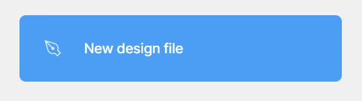
It will open up a brand new file with quite a bit - it can definitely look a little
intimidating but don't worry, you'll be up and designing in no time! The brand new, blank
file will look like this:
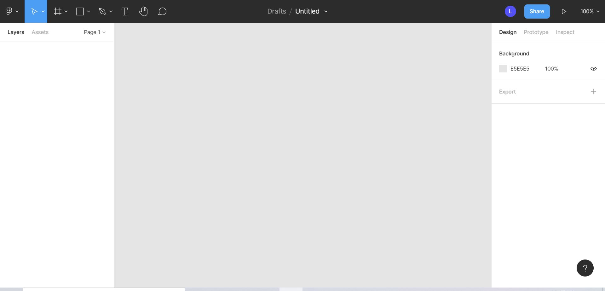
We'll start off by taking a deeper look into the tools, which is everything you see
in the upper lefthand corner. This will be your go-to for all things and it makes life
much easier. Eventually, you can choose to learn the shortcuts if you want to, but
we won't be covering that in detail. Just know it is an option if you want!
Tools!
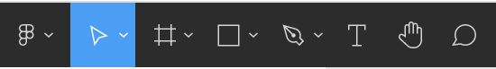
These are the tools I'll be discussing. Starting from left to right we have the Figma icon,
if you click on this you will see options to go back to your dashboard, edit the file you're in,
or later on, add or manage plugins, integrations, and more.
Next up, we have the pointer icon. This just helps you to "grab" your work. If you switch it
to scale by clicking the dropdown menu, you can easily scale any item you click as opposed
to hunting down the exact corners or edges.
The frame icon - this allows you to create different frames. These are going to be
your artboards, and they even have presets that allow you to select different sizes such as
desktop, laptop, tablets, different styles of phones, as well as print options such as
A4 or tabloid. There are a ton of really great options here, so do some exploring.
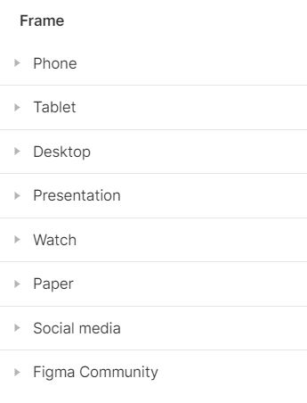
Underneath the frames, if you click the dropdown menu, is the slice tool. This can let
you divide something into smaller sections to make it easier to manage. I personally don't
use it frequently so I won't get into it too deeply, but feel free to explore more!
After that, we have the square icon, which if you click it you can see a wide variety
of options for shapes and images.
Then you have the pen/pencil tools for vectors, the text tool, a hand to grab and move
around your file, and finally comments - this is incredibly useful when working on
a team, or even to leave reminders to yourself.
Layers, Assets, and Pages
On the lefthand side there’s layers, assets, and pages. Layers show you the organizational
structure of what is “farthest away” and what is “closest”, assets shows you
components, groups, and pieces you’ve built, and pages shows different pages.
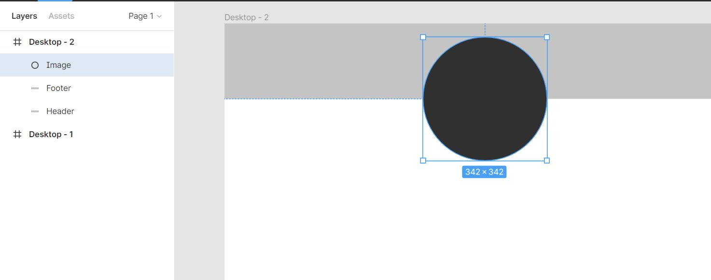
For example, if you select the layer that I have named "Image", you can see it highlighted
on the artboard. You can use this to move items behind one another, in front of, etc. to create
depth to your work.
Grouping layers - You can group layers together by selecting the layers you want,
right clicking, and finding “Group selection” - this will help keep everything organized.
To ungroup simply right click the selection again and hit ‘ungroup’.
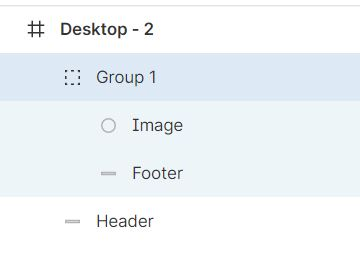
Grid
The grid is a super handy tool for web and mobile developers! It can even help print
designers align their components. If you create a new frame and then click on it,
on the righthand side you'll see something that says "Layout grid".
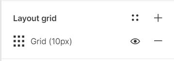
Click the plus button to add a grid. If you click the little grid section,
you’ll have the ability to change the size, color, opacity, and if you select
grid, you can add columns or rows. To add columns or rows AFTER that, simply
hit plus again next to layout grid! This is how a lot of features work.
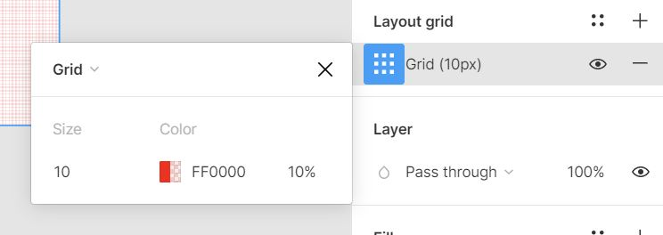
Styles, Colors, and Text
You are able to set colors and details about the text (font, size, etc.) in numerous
different ways, and you're even able to save them as 'styles', which allows you
to easily reuse them.
To set colors, click on the layer you would like to color and look on the right
hand panel.
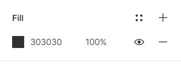
This allows you to select a color, input a hex code, or change the opacity. If you want
to get into more details like gradients, click on the box of color. There's a dropdown menu
at the top that should say 'solid' right now, if you click that, you can change to
different types of gradients with different opacities.
Text is very similar, you will have a menu on the right panel that will
allow you to select different options. It's very easy to use, especially if you have
used other similar tools!
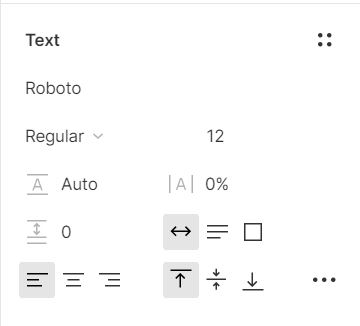
Now for the fun part! To save a style, all you have to do is click the four dots
in the upper right hand corner of the panel (text, color, etc.) and then hit the plus button.
Make sure to give your style a useful name, otherwise you'll be like me and end up with
"style1" "style2" "style3" and so on. Later on, you can also add your styles to
different folders to keep them more organized by clicking off your frames and onto
the background.
Effects
To access effects, click on the layer you'd like to add a shadow or blur to.
From there, on the righthand panel, you'll see a section titled 'effects'. This will give
you access to different kinds of blurs and shadows. To add one click the plus button, select your
type, then to get different kinds, select the little sun.
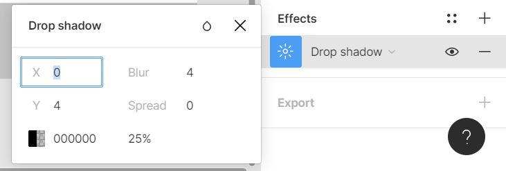
Components
For the last part of our basic guide to Figma, we're going to discuss a very useful tool -
components. These create reusable UI pieces, like having multiple pieces of Legos that you
can reuse over and over. However, for the most part, every replication of the component will
match what's called the master component (the original). If you change the original,
the rest will change, so do use them carefully.
To use them, select the layers that you want and right click, then select "Create component".
Now you can make other components from that original. There are a few exceptions of aspects
you can change from the duplicated components, but we won't get in to that for now.
Closing Remarks
Well thanks for sticking with me! That was a lot of information thrown at you
at once, but I truly hope it was useful. If you ever have any questions on using
Figma, feel free to send me an email using the form found here.
Happy Figma'ing!